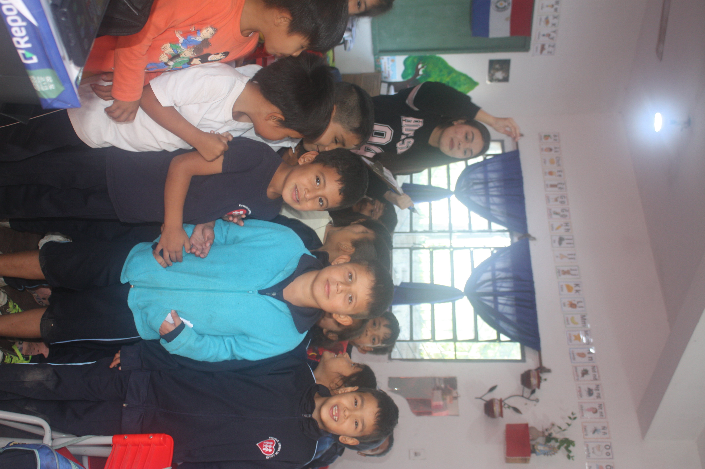
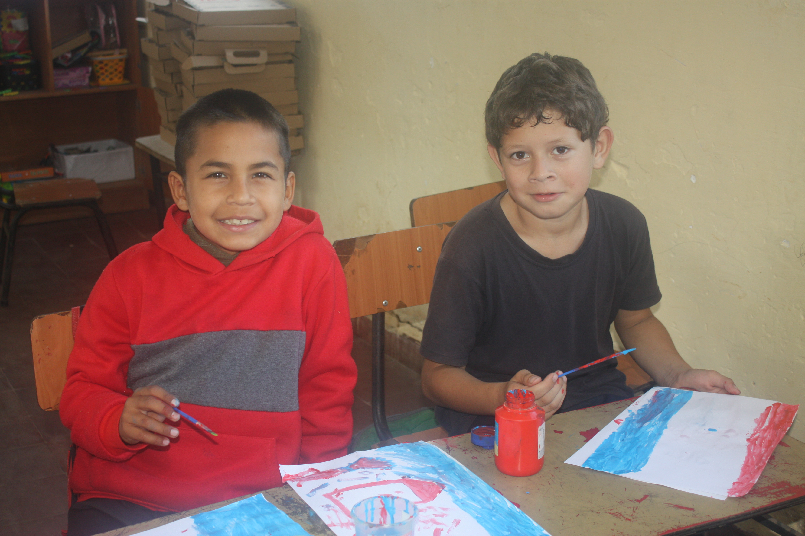

COMPARTIMOS, APRENDEMOS Y SERVIMOS


Como alumnos del CTJ tuvimos la oportunidad de realizar una misión de cuenta cuentos con los niños. Fue una experiencia muy linda, ya que pudimos compartir con ellos y aprender juntos.
Primero realizamos una dinámica para llamar su atención y que todos pudieran participar. Después les mostramos los cuentos y los leímos juntos, tratando de que disfrutaran y entendieran las distintas historias que presentamos.

Al terminar el cuento, los niños realizaron dibujos sobre lo que más les llamó la atención de la historia. Fue muy lindo ver cómo cada uno representó a los personajes de las historias a su manera.
Esta misión fue una experiencia muy linda, porque pudimos compartir con los niños y aprender junto a ellos. Aunque tuvimos que practicar y prepararnos, logramos realizar todas las actividades que propusimos. Esperamos poder volver algún día para repetir esta experiencia.